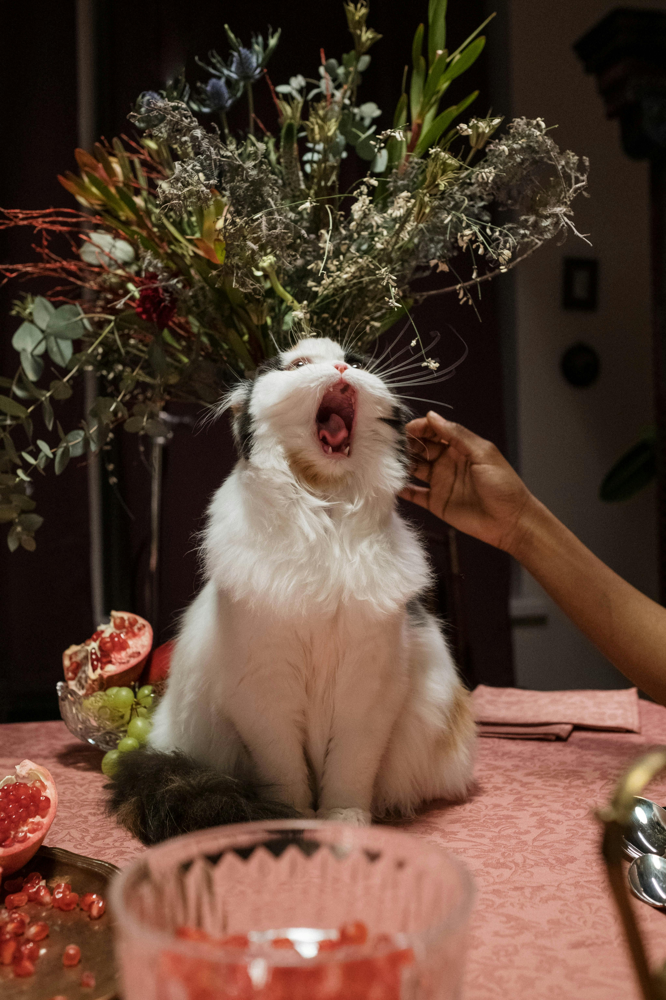

Ко́шка (лат. Felis catus) — домашнее животное, одно из наиболее популярных (наряду с собакой) «животных-компаньонов».
Значение и этимология слова «кошка»
В русском языке слово «кошка» означает либо представителя биологического вида Felis catus вообще независимо от пола, либо самку этого вида. Самца называют «кот», а детёныша кошки — «котёнок» (мн. ч. котя́та).
Слово «кошка» в русском языке является диминутивом от др.-русск. слова котъка, которое, в свою очередь, происходит от существительного «кот» и является родственным лат. cattus «кошка» (так, в поздней латыни, начиная с V века, в отличие от классического латинского felis) и близким названиям во многих языках Европы и Ближнего Востока (англ. cat, арм. կատու, katu, галл. cath, ирл. catt, исп. gato, итал. gatto, рут. gyat, лезг. кац, лит. katė, нем. Katze, нуб. kadis, прусск. catto, фр. chat). Первоначальный источник неизвестен, но принято считать, что во многие языки слово попало из латинского.
Некоторые исследователи предполагают, что в основе слов различных индоевропейских языков, обозначающих кошку, лежит праиндоевропейский корень *kat- , от которого произошли глаголы индоевропейских языков, означающие «котиться», от которых позднее произошли названия детёнышей мелких животных на индоевропейских языках. Другие исследователи считают такую связь вторичным сближением.
Происхождение и история одомашнивания
Согласно генетическому исследованию аутосомных маркеров и митохондриальной ДНК 979 домашних, диких и одичавших кошек с трёх континентов, в том числе барханных кошек (Felis margarita), все домашние кошки по материнской линии происходят как минимум от пяти представительниц подвида степная кошка (Felis silvestris lybica), имеющих разные гаплотипы митохондриальной ДНК. В митохондриальной гаплогруппе IV, специфической для ближневосточных и домашних кошек, идентифицировали 6 субклад и рассчитали время жизни общего предка — ок. 13 тыс. лет назад, что значительно превышает время предполагаемого одомашнивания ближневосточных кошек. Генетический анализ митохондриальной ДНК 209 кошек из 30 захоронений на территории Европы, Ближнего Востока и Северной Африки показал, что домашние кошки распространялись по миру двумя большими волнами. Первая волна имела место на заре сельского хозяйства 12—9 тыс. лет назад — в Плодородном полумесяце и его окрестностях домашние кошки расселились вместе с земледельцами по всему Ближнему Востоку. Несколько тысяч лет спустя вторая волна, вышедшая из Египта, охватила практически всю Европу и Северную Африку.
Вопрос о полном одомашнивании
В наше время среди учёных нет общепринятого ответа, является ли кошка полностью одомашненным животным, так как, например, собака в процессе одомашнивания изменила свою модель поведения, сумев развить довольно сильную привязанность и преданность к человеку, и одновременно утратила множество способностей к охотничьему образу жизни и сигнальному общению, присущих её предкам — волкам. Кошка же по поведению почти не отличается от своего дикого предка, демонстрируя высокую независимость и повадки «одинокого хищника».
Некоторые учёные считают, что кошка и вовсе не является одомашненным животным, а сама могла прийти к человеку, так как в селениях всегда в достатке водились синантропные животные или, проще говоря, многочисленные грызуны и птицы. Таким образом, кошка нашла для себя удобный источник пищи, закрепившись в «новой нише». Сосуществование человека и кошки было взаимовыгодным, так как человек избавлялся от грызунов, которые часто становились источником заболеваний и порчи хозяйства. Также весомым доводом противников идеи одомашнивания остаётся тот факт, что, по их мнению, кошка показывает любопытство к человеку только до тех пор, пока ей это выгодно, то есть маленький хищник не способен на верность. Другие же учёные продвигают иную точку зрения. По их мнению, тот факт, что кошки подвергались одомашниванию, подтверждается тем, что они способны на привязанность и игривое поведение и именно для установления эмоционального контакта с человеком научились мурлыкать. Многие кошки показывают свою привязанность, устанавливая физический контакт с человеком, например, забираясь ему на колени; известны случаи, когда преданность кошки хозяину была сильнее, чем у многих собак, и это на фоне того, что кошки произошли из «опаснейших и неприветливейших хищников в мире». На негативный образ кошки как дикого и подозрительного животного повлиял и продолжает влиять тот факт, что в средневековой Европе католическая церковь обвиняла кошек в связи с дьяволом и колдовством.
Несмотря на споры, большинство учёных сошлись во мнении, что кошка является полуодомашненным животным, то есть она способна на сосуществование с человеком, но, потеряв с ним контакт, легко возвращается к дикому образу существования. Хотя у кошки наблюдаются генетические изменения в сравнении с диким предком, эта разница в 10 раз меньше, чем у собак с волками. Учёные считают, что дикая кошка действительно могла сама прийти к человеку, чтобы питаться грызунами, а такие отношения характеризовались как соседские, и уже через несколько тысяч лет люди сами стали одомашнивать маленьких хищников. Это также, вероятно, объясняет, почему модель поведения кошки почти не изменилась; при одомашнивании собаки из волка человек изменил её образ жизни и среду обитания, кошка же претерпела минимальные изменения. Кошка сумела сохранить модель поведения, присущую её диким предкам. Она почти так же хорошо охотится, как дикая кошка, но в то же время способна мирно сосуществовать с человеком, проявлять к нему эмоциональную привязанность, нежность или даже игривость.
О чем же была эта статья?
- Значение и этимология слова «кошка»
- Значение слова "кошка" в русском языке
- Слово "кошка" как диминутив слова "котька"
- Предположение исследователей о праиндоевропейские корни слова
- Происхождение и история одомашнивания
- По генетическому исследованию
- Вопрос о полном одомашнивании
- Так каков итог: кошка - полностью одомашненная или нет?
- Предположение исследователей о непреднадлежности кошки к одомашненным животным
- Кошка - полуодомашненное животное
История развития кошек
| Периоды |
Описание |
| 13-9 тыс. лет до н.э. |
Одомашнивание |
Первое полное одомашнивание кошек в сельском хозяйстве |
| Синантропизм |
Кошки стали синантропными животными, ведя счастливую жизнь в сельских районах |
| 12-9 тыс. лет до н.э. |
Плодородный период |
Кошки стали распространяться по миру двумя большими волнами |
| Общее одомашнивание |
Кошки стали полностью одомашненными животными, сохраняя свои дикие особенности |
| Современное время |
Полуодомашненность |
Кошки могут сосуществовать с человеком, но легко возвращаются к дикому образу существования |

— Наш кот подходит к шторам, которые чуть длинноваты и лежат на полу, наступает на них и начинает крутиться, чтобы штора обернулась вокруг него как кокон, а затем прекрасно себе спит весь день в таком состоянии рядом с батареей.
А у бабушки один раз кошка прошлась по свежеслепленным пельменям так, что на них остались следы-вмятины.
Перед отъездом в двухнедельный отпуск жена отвезла нашу изящную ангорскую кошечку Уму (2,5 кг) на передержку.
Возвратившись домой, первым делом схватил переноску и поехал забирать нашу красавицу.
Хозяйка кошачьего приюта пригласила меня в комнату. Минимум мебели, по комнате перемещаются штуки три хвостатых постояльца, из-под тахты виднеется морда здоровенного кота породы "Невская маскарадная".
- А где же наша Ума? - спрашиваю я.
- А вон на кухне, на холодильнике сидит, за порядком наблюдает. Она тут у нас вроде как бригадир.
Показывает на кота, сидящего под тахтой:
- Вчера Филю привезли, хозяева предупредили, что кот очень дорогой, оставили сумку суперэлитного корма, я такого никогда ещё и не видала. Так ваша Ума загнала его под тахту и не выпускает оттуда. Конечно, котик ещё социально не адаптирован, но ничего, вот вы сейчас Умочку заберёте, так ему немного полегче будет...

— Была однажды у друзей в гостях.
У них живет огромный рыжий красивый кот. Зовут Аркадий. Мы его величаем Аркадий Евгеньевич.
Так вот Аркадий Евгеньевич очень любит полакомиться новенькими AirPods.
И вот однажды он у меня вытащил их из кармана куртки, висящей в шкафу, и радостно носился с ними по квартире. А потом устроился на кровати и радостно начал грызть, пока не отобрали.
— Один мой гадкий кот — гадкий в прямом смысле: кажется, это зависит от фаз Луны, но его частенько переклинивает, и меня, приходящую с работы, ждут две-три аккуратных кучки в коридоре. Коту уже семь лет, и он неизлечим. Еще, когда его только принесли, он сожрал все доступные провода в доме, особенно ему нравился провод от ноутбука.
Другой мой кот сделал гадко себе: этот тупяш запрыгнул в форточку и провалился между оконными рамами и сидел так весь день. Зимой.
И схватил воспаление легких, из-за чего пришлось прерывать свои рождественские возлияния в Финляндии и носить 7-килограммовое чудовище лечиться.
Мяу мяу мяу мяу мяу мяу мяу мяу мяу мяу мяу мяу мяу мяу мяу мяу мяу мяу мяу мяу мяу мяу мяу мяу мяу мяу мяу мяу мяу мяу мяу мяу мяу мяу мяу мяу мяу мяу мяу мяу мяу мяу мяу мяу мяу мяу мяу мяу мяу мяу мяу мяу мяу мяу мяу мяу.
Тут больше котиков!!!!!!